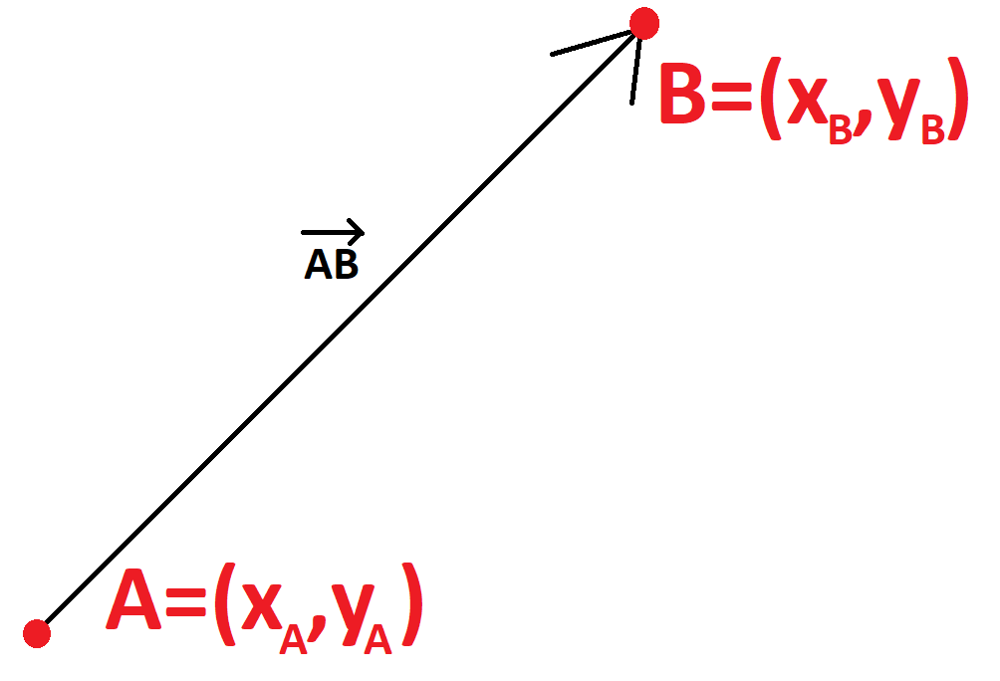

Wektory - przydatne infromacje i właściwości
Czym jest wektor?
Mówiąc w dużym uproszczeniu wektor jest strzałką pomiędzy dwoma punktami (taka jak na obrazku poniżej). Jest to dość szorstka definicja, jednak pozwala nam ona wyrobić sobie pewną intuicję.
Dobrze ale w takim razie czemu ta strzałka jest tak często używana w fizycę i matematyce? Wektor przenosi wiele informacji i względnie prosto wykonuje się na
nim rózne operacje. Informacje, które przenosi ta nasza strzałka/wektor to:
Długość - te wielkość możemy rozumieć jako odległość między dwoma punktami i oznaczamy ją jako \(|\vec{AB}|\). W fizyce ta długość będzie miała różne znaczenia w zależności od tego
jaką wielkość opisujemy np. w przypadku wektora położenia będzie ona oznaczać odległość od naszego punktu odniesienia do innego punktu w przestrzeni,
w przypadku wektora prędkości będzie on oznaczał jak wektor położenia zmienia się w jednostce czasu itd.,
Kierunek - jest to po prostu kierunek wzdłuż którego leży strzłka. W fizyce wyróżniamy trzy kierunki - pionowy, poziomy oraz ukośny,
Zwrot - jest to strona, w którą wskazuje grot strzałki. W praktyce zwrot pozwala nam psotawic znak + lub - przed składową wektora.
To który ze znanków znajdzie się przed składową zależy od tego czy zwrot jest w tym samym kierunku czy przeciwnym do zdefiniowanych przez nas osi układu.

Warto również wspomnieć czym jest wersor \(\hat{e}\) - jest to wektor jednostkowy, czyli taki o długości jeden. Jest przydatny do np. definiowania kierunków
osi naszego układu współrzędnych
Wspólrżedne wektora \(\vec{AB}\) zaznaczonego na rysunku obliczamy w ten sposób \([x_A-x_B,y_a-y_B]\). Poszczególne składowe tego wektora oznaczają jego rzuty na daną oś,
jak również długość wektora składowego wzdłuż osi. Długość wektora obliczamy stosują twierdzenie pitagorasa - wyciągając pierwiastek z sumy kwadratów składowych wektora.
Możemy zastosować twierdzenia pitagorasa do policzenia długości wektora, ponieważ osie układu są zdefinowane w taki sposób, że są wzgledem siebie prostopadłe,
a co za tym idzie również składowe wzdłuż nich również.
Dodajemy/odejmujemy wektory poprzez dodawanie/odejmowanie od siebie poszczególnych składowych wektorów.
Iloczyn skalarny
Iloczyn skalarny definiuemy jako \(\vec{A}\cdot\vec{B}=A_x*B_x + A_y*B_y\) gdzie \(A_i\) oraz \(B_i \) to składowe odpowiednich wektorów, iloczyn
skalarny spełnia również zależność \(\vec{A}\cdot\vec{B}= |\vec{A}||\vec{B}|cos(∠\vec{A}\vec{B})\) często stosowanym oznaczeniem iloczynu skalarnego jest
również <\(\vec{A},\vec{B}\)>
Z drugiej definicji warto zauważyć, że jeżeli wektory są do siebie prostopadłe to iloczyn skalarny daje nam zero, podczas gdy jeśli są do siebie równoległe/antyrównoległe
to iloczyn skalarny jest równy iloczynowi długości poszczególnych wektorów ze znakiem plus/minus. Natomiast jeśli weźmiemy iloczyn skalarny dwóch takich samych wektorów to otrzymamy kwadrat
długości wektora oznaczany ||\(\vec{A}\)||.
Warto również wspomnieć o dwóch właściwościach iloczynu skalarnego:
przemienność czyli \(\vec{A}\cdot\vec{B}=\vec{B}\cdot\vec{A}\)
rozdzielność czyli \(\vec{A}\cdot(\vec{B}+\vec{C})=\vec{A}\cdot\vec{B}+\vec{A}\cdot\vec{C}\)
Baza
Baza jest to zbiór wektorów, które są:
Linowo niezależne - żadnego z wektorów bazy nie da się otrzymać poprzez dowolną kombinację pozostałych wektorów bazy (\(\vec{v_i}\)). Aby sprawdzić czy wektory są liniowo niezależne
należy sprawdzić czy równanie \(\sum a_i\vec{v_i}=0\) jest spełnione tlyko wtedy kiedy wszystkie współczynniki \(a_i=0\)
Generują całą przestrzeń - oznacza to że dowolną kombinacje liniową wektorów z tej przestrzeni (np.ℝ\(^2\)) można zapisać jako kombinacje wektorów bazy
Wymiarem przestrzeni nazywamy liczbę wektorów rozpinających bazę.
Bazą kanoniczą nazywamy bazę rozpiętą przez wersory posiadaje tylko jedną składową rózną od zera.
Warto wspomnieć o dwóch szczególnych bazach:
Baza ortogonalna
Jest to baza, w której iloczyn skalarny dowolnej pary różnych wektorów tej bazy daje 0 (wszystkie wektory są do siebie prostopadłe).
\(\vec{v_i}\cdot\vec{v_j}=0\) gdzie i≠j.
W celu ortogonalizacji bazy można zastosować procedurę ortogonalizacji Grama-Schmidta. Robi się w to ten sposób:
Mamy bazę wektorów \(\vec{v_i}\), którą chcemy przekształcić na ortogonalną bazę \(\vec{u_i}\)
Wybieramy jeden z wektorów v (np. wektor \(\vec{v_1}\)) i trkatujemy go jako pierwszy wektor bazy u (\(\vec{v_1}=\vec{u_1}\))
Obliczamy operator rzutu który definiujemy jako \( proj_{\vec{u_i}}\vec{v_j} = \frac{\vec{v_j}\cdot\vec{u_i}}{\vec{u_i}\cdot\vec{u_i}}\vec{u_i}\) czyli po prostu składową wektora \(\vec{v_j}\) w kierunku wektora \(\vec{u_i}\)
Teraz chcemy aby nasz wektor \(\vec{v_2}\) stał się wektorem \(\vec{u_2}\) prostopadłym do \(\vec{u_1}\). Aby to zrobić obliczmy \( proj_{\vec{u_1}}\vec{v_2}\) czyli składowe
wektora \(\vec{v_2}\) wzdłuż \(\vec{u_1}\).
Teraz obliczamy \(\vec{u_2}=\vec{v_2} - proj_{\vec{u_1}}\vec{v_2} \) i mamy kolejny wektro bazy. Ale co właściwie zrobiła ta operacja? No więc odejmując rzut od wektora pozbyliśmy się jego składowych równoległych do \(\vec{u_1}\) czyli zostały nam jedynie składowe prostopadłe
do tego wektora, a więc i sam wektor jest do niego prostopadły.
Dla kolejnych wektorów musimy obliczyć rzuty \(\vec{v_i}\) na wszystkie poprzednie wektory \(\vec{u_j}\) gdzie j<i
Baza ortonormalna
Jest to baza ortogonalna, w której wszystkie wektory są znormalizowane czyli mają długość 1.
Strona główna